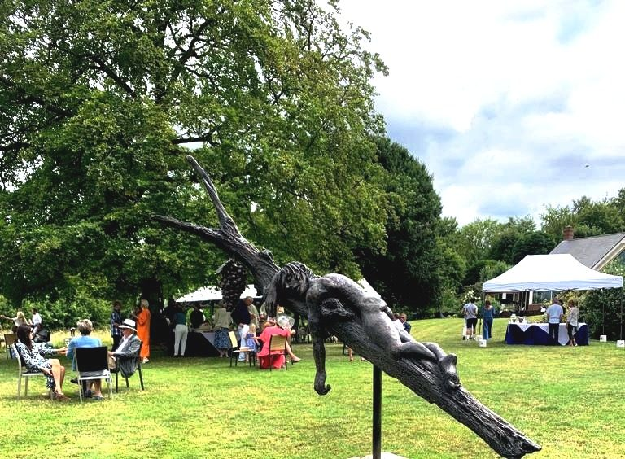

Surrey
High Clandon Estate Vineyard
Estate-verified · November 2026
A small sparkling wine estate on the Clandon Downs, with Tour, Talk, Tasting on Open Days, a summer art and sculpture show, and views across the Surrey Hills to the London skyline.

The visit
High Clandon is an Open Day visit: roughly once a month from late April to October, with tours at noon and 3pm. Book ahead, as each tour takes 15 people.
Tour, Talk, Tasting
Twice on each Open Day, at 12 noon and 3pm, for up to 15 people. Book through High Clandon’s website.
2027 Open Days
18 April, 8 May (Surrey Day), 31 May, 19 June, 30 August, 18 September, 2 October and 23 October. There are no Open Days in July or August apart from the bank holiday.
Art & Sculptures in the Vineyard
Runs 27 June to 11 July 2027.
Jazz in the Vineyard
Saturday 12 June 2027: a matinee from noon (music 12.45 to 3pm) and an evening session from 5.15pm (music 6 to 8.15pm).
Bringing the dog
In the estate’s words, “lovely dogs with lovely owners are welcome”.
Don’t miss
The estate’s own tip: the views across the Surrey Hills to London’s skyline, and the sparkling wine.
The nearest stations are Clandon, about a 20-minute walk, and Horsley, about 7 minutes by cab.
Common questions
When are High Clandon’s Open Days in 2027?
18 April, 8 May, 31 May, 19 June, 30 August, 18 September, 2 October and 23 October.
Do I need to book a tour at High Clandon?
Yes. Tour, Talk, Tasting runs at noon and 3pm on Open Days for up to 15 people, booked through the estate’s website.
Can I bring my dog to High Clandon?
Yes. The estate says lovely dogs with lovely owners are welcome.
How do I get to High Clandon by train?
Clandon station is about a 20-minute walk; Horsley is about a 7-minute cab ride.
At a glance
- Region
- Surrey
- Where
- East Clandon, near Guildford, Surrey
- Tours
- Noon and 3pm on Open Days, max 15
- Open Days
- Late April to October (not July)
- Dogs
- Welcome
- By train
- Clandon (20 min walk) or Horsley (7 min cab)
- Founded
- 2004 (from their website)
Also in Surrey
- Albury Organic Vineyard Silent Pool, Albury, near Guildford
- Denbies Wine Estate Dorking
- Greyfriars Vineyard Puttenham, near Guildford